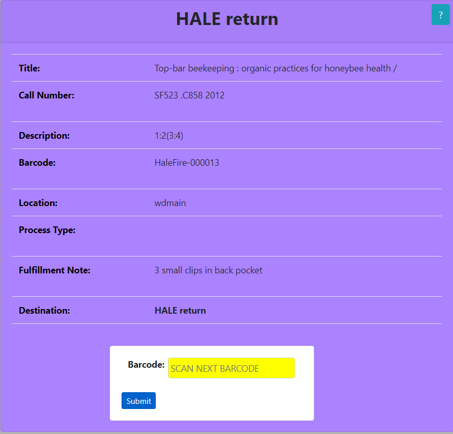

Esta aplicación facilita el flujo de trabajo de Unboxing al proporcionarle información importante. Le proporciona el Título físico, Número de clasificación, Descripción, Códigos de procedencia, Tipo de proceso, Nota de servicios al usuario y su Destino final. La aplicación está codificada por colores para proporcionar una respuesta visual estimulada, así que revise la tabla de códigos de color a continuación. Después de escanear su primer código de barras, podrá escanear su próximo código de barras desde la página de resultados. Si tiene alguna pregunta, no dude en preguntar al personal de la biblioteca.
El primer formulario le pide que escanee los códigos de procedencia. Estos códigos de procedencia se pueden escanear con el escáner de códigos de procedencia o ingresándolos. Cuando haya ubicado los códigos de procedencia en la pieza física, ingrese dichos códigos de forma en el formulario:
Si los códigos de procedencia no existen dentro del sistema, recibirá un error. Verifique la pieza física para otros códigos de procencias y si todos devuelven el siguiente error, coloque el elemento físico en el Estante del problema :

El siguiente formulario mostrará la información del elemento físico Sin caja . El Destino se mostrará en la parte superior de la página seguido de Título , Número de clasificación , Descripción , Códigos de procedencia , Tipo de proceso , Nota de servicios al usuario , y el Destino nuevamente. El color de fondo del formulario está relacionado con el destino del elemento físico. Revise la tabla de códigos de color a continuación. Si la fila Tipo de proceso tiene un color de fondo de rojo coloque el elemento físico en el Estante del problema , ignorando el destino indicado. Si la fila Nota de cumplimiento tiene un color de fondo rojo , coloque el elemento físico en el Estante del problema , ignorando El destino indicado:

Cuando esté listo, puede escanear los siguientes códigos de procedencia utilizando el formulario en la parte inferior de la página:

| Destino | Descripción |
|---|---|
 |
Coloque el artículo físico en los estantes de devolución HALE |
 |
Coloque el elemento físico en los estantes ANNEX ingest |
 |
Place physical item on To be WITHDRAWN shelves |
 |
Place physical item on Problem Shelf |
 |
Place physical item on Problem Shelf |
 |
Place physical item on Problem Shelf |